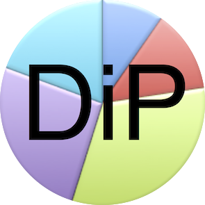

*** * * * * * * * * * * * * ***

Divided Party
(DiP) brand tokens
Investors can contact the current representative for Africahead, if they want to invest in Africahead equity at the contact details. Download the proposal for a private placing of equity.
DiP Tokens Ethereum Contract Address:
0xA27BE88ad1dcE22609a4 a7f4C395F861bbaBEaE2
Remove the space between 4 and a.
Download the DiP logo or use this link for the DiP logo.
DiP tokens represent 48% of the Divided Party brand value. When R20'000'000 (ZAR) value will have been raised, the issued tokens will represent the 48%. It is not certain how things will develop from there. If practical, an idea is that each DiP holder, then, must have an option to purchase new issues of DiP first, similar to a rights offer of listed shares on a stock exchange. If that will be possible, is not certain at the moment.
The issue prices of DiP will increase. That implies leaders of Federal Party SA (FPSA) will have to lead well, because new issues of DiP tokens will have to compete with sellers of DiP in the market.
DiP brand tokens are listed at Ipparts Exchange (IPPAEX).
The initial issue price of a DiP token was 0.2 ETH, which was equal to 43 USD on 1 August 2019. Issue prices will increase, therefore earlier buyers will get more tokens for their donation/investment.
Buying DiP tokens funds FPSA, a registered political party. Donations to political parties are tax deductible, therefore buying DiP, is tax deductible. Logically therefore, if a DiP token is sold in the future, the receipt will have to be included in taxable income, up to the same amount deducted for taxation, when the purchase was made.
TWO PURPOSES
DiP tokens have two purposes:
(1) The first is to raise funds for FPSA and self-determination politics, in general, with tax deductible token sales.
(2) The second is to motivate the leaders of FPSA to do a good job, because if they don't, token holders will be able to
sell their tokens, on the market, for less than the increased issue prices. If the leaders do a good job, token hodlers will
hodle their tokens and new tokens will be issued at the increased token issue prices, increasing every month. The sooner
tokens are bought, the more tokens will be received for the same investment/donation amount.
Sign with a

Metamask Wallet
to connect and transact at:
*** * * * * * * * * * * * * ***
DiP Exchange Counter

wallet to wallet
*** * * * * * * * * * * * * ***
0xTracker tracks tokens on
0x Project Exchanges.
*** * * * * * * * * * * * * ***
Contact details:
Tel: +27(0)824477125
Email: federalpartysa@gmail.com.
Chat: Africahead lobby at https://gitter.im or Telegram Chat Group or WhatsApp.
Telegram News - not for chatting.